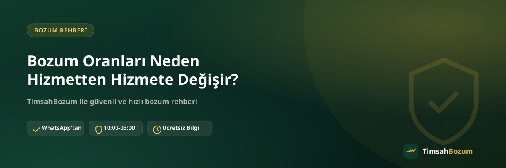

Razer Gold, Pokus, Paycell, iTunes ve mobil ödeme bozdurma sayfalarına bakan birçok kişi ilk fark ettiği şeylerden biri, her hizmetin yanında farklı bir yüzde görmek oluyor. "Aynı işlem değil mi, neden oranlar birbirinden bu kadar farklı?" sorusu sık sorulan bir soru. Bu yazıda oranları belirleyen temel etkenleri ve hangi hizmetin neden farklı bir oranla değerlendirildiğini anlatıyoruz.
Bozum Oranını Belirleyen Etkenler Nelerdir?
Bir bozum hizmetinin oranı tek bir sebeple değil, birkaç etkenin birleşimiyle şekilleniyor: işlemin kod mu bakiye mi olduğu, o hizmetin piyasada ne kadar hızlı nakde çevrilebildiği ve işlem sürecinin taşıdığı risk. Bu üç etken bir arada değerlendirildiğinde, neden Razer Gold ile Turkcell mobil ödeme arasında bu kadar fark olduğunu anlamak kolaylaşıyor.
Kod Tabanlı ve Bakiye Tabanlı Hizmetler Arasında Oran Neden Farklı?
Razer Gold ve iTunes gibi hizmetlerde bozdurulan şey tek kullanımlık bir koddur; kodun tamamı tek seferde değerlendirilir, kısmi bozum yapılmaz. Pokus, Paycell ve operatör mobil ödeme bakiyelerinde ise durum farklı: hesaba tanımlı bir bakiye söz konusu olduğu için bu bakiyenin tamamı ya da bir kısmı bozdurulabilir. Bu yapısal fark, iki grubun oranlarının neden aynı mantıkla karşılaştırılamayacağını açıklıyor.
Razer Gold ve iTunes Oranı Neden Diğerlerinden Yüksek?
Kod tabanlı hizmetlerde işlem, kodun doğrulanmasıyla birlikte netleşir ve süreç görece kısa sürede tamamlanır. Bu işleyiş, Razer Gold bozdurma gibi hizmetlerde güncel referans oranın %70 gibi diğer hizmetlere göre daha yüksek bir seviyede olmasına imkân tanıyor. iTunes tarafında da benzer bir mantık geçerli, güncel referans oran %55 seviyesinde.
Paycell ve Pokus Oranı Nasıl Belirleniyor?
Paycell ve Pokus bakiyeleri hesap tabanlı olduğu için işlem, güncel bakiyenin ekran görüntüsüyle doğrulanmasına dayanır. Bu iki hizmette güncel referans oran %60 seviyesinde tutuluyor. Paycell bozdurma işleminde kısmi bozum mümkün olduğu için, bakiyenin tamamını değil istediğin bir kısmını da değerlendirmeye alabiliyoruz.
Turkcell Oranı Neden Diğer Operatörlerden Düşük Görünüyor?
Turkcell mobil ödeme bozdurma hizmeti aktif ve doğrudan işlemde %30 oran uygulanıyor; bu, Vodafone ve Türk Telekom'un %50'lik referans oranına göre daha düşük bir seviye. Ancak müşterinin Paycell hesabı varsa aynı bakiye Paycell altyapısı üzerinden değerlendirilir ve oran %60'a çıkar. Bunun nedeni, Paycell üzerinden yürüyen işlemin tahsilat ve doğrulama sürecinin farklı işlemesi. Detaylı bilgiye Turkcell mobil ödeme bozdurma sayfasından ulaşabilirsin.
Vodafone ve Türk Telekom Oranı Neden Birbirine Yakın?
Vodafone ve Türk Telekom mobil ödeme bakiyelerinde işleyiş büyük ölçüde benzer olduğu için güncel referans oranları da birbirine yakın seyrediyor, ikisinde de %50. Her iki operatörde de bakiye tabanlı değerlendirme geçerli, yani kısmi bozum mümkün. Detaylı süreç bilgisine mobil ödeme bozdurma sayfasından ulaşabilirsin.
Oranlar Zaman İçinde Değişir mi?
Evet, oranlar sabit bir sayı değil, piyasa koşullarına göre güncellenebilen bir referans aralığı. Sitede ve bu yazıda paylaşılan yüzdeler genel bir referans niteliğinde; işlem öncesi güncel oranı WhatsApp'tan (+90 543 887 21 71) teyit etmek en doğru yaklaşım. Teyit ettiğin oranı ekran görüntüsü olarak saklaman, işlem sırasında bir karışıklık çıkarsa referans olarak işine yarar.
Google Play Kodlarında Oran Neden Farklı Kurallara Bağlı?
Google Play kod bozdurma güncel referans oranı %45 seviyesinde, ama bu hizmette oranın yanında ek bir kural daha var: yalnızca 500 TL veya 1.000 TL değerindeki kodlar işleme alınıyor, bu tutarların dışındaki kodlar kabul edilmiyor. Ayrıca sadece kullanılmamış kod bozduruluyor; hesaba yüklenmiş bir Google Play bakiyesi bu kapsamda değerlendirilmiyor. Bu örnek, oranın kendisi kadar hizmete özgü kuralların da işlemi etkileyebildiğini gösteriyor; bu yüzden kod veya bakiyeni paylaşmadan önce hangi hizmete ait olduğunu ve o hizmetin kendine özgü şartlarını bilmek işlemi hızlandırıyor.
Farklı Hizmetlerde Bakiyen Varsa Hangisini Önce Bozdurmalısın?
Birden fazla hizmette bakiyesi veya kodu olan kullanıcılar için bu soru sık gündeme geliyor. Yüksek oranlı bir hizmetteki düşük tutarlı bir bakiye, düşük oranlı ama yüksek tutarlı bir bakiyeden daha az ödeme getirebilir. Bu yüzden karar vermeden önce elindeki tüm kod ve bakiye bilgilerini WhatsApp'tan paylaşıp güncel oranlarla net bir hesap yapmak en sağlıklı yöntem; hangi sırayla işlem yaptırdığın oranı değiştirmez, ama doğru planlama toplam getirini etkileyebilir.
Aynı Hizmette Herkese Aynı Oran mı Uygulanır?
Evet, bir hizmetin güncel referans oranı, o an için işlem yapan herkese aynı şekilde uygulanır; kişiye özel pazarlıkla değişen bir oran söz konusu değil. Farklılık kişiden kişiye değil, hangi hizmetin bozdurulduğuna ve işlemin hangi anda gerçekleştiğine göre ortaya çıkıyor. Bu yüzden bir tanıdığının aynı hizmette farklı bir oran aldığını duyarsan, muhtemelen işlemler farklı zamanlarda yapılmış ve piyasa koşulları o aralıkta güncellenmiştir.
Elindeki kod veya bakiyenin güncel oranını öğrenmek için WhatsApp hattımıza yazabilirsin.
Kısacası
Bozum oranlarının hizmete göre farklı olması rastgele değil; kodun mu bakiyenin mi bozdurulduğu, işlemin ne kadar hızlı doğrulandığı ve o hizmete özgü süreç yapısı oranı şekillendiren temel etkenler. Hangi hizmette ne oran uygulandığını net görmek ve güncel yüzdeyi teyit etmek istersen, doğrudan WhatsApp hattımızdan yazman yeterli.
İlgili Yazılar
- Mobil Ödeme Bozdurma Komisyon Oranları Nasıl Belirlenir?
- Bozum İşlemi Yaparken Nelere Dikkat Etmeli
- Bozum İşlemi Nedir, Nasıl Çalışır? (Yeni Başlayanlar İçin)